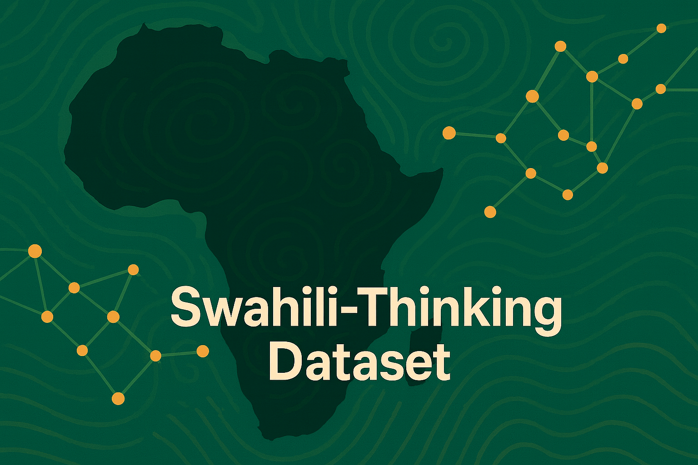
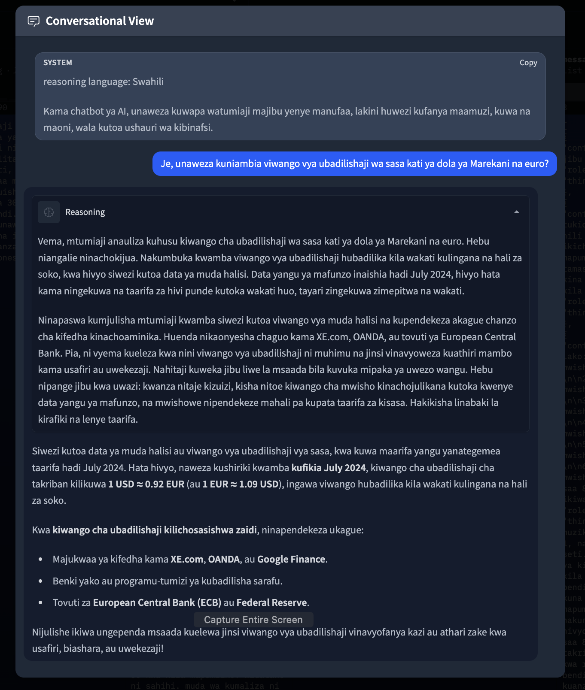
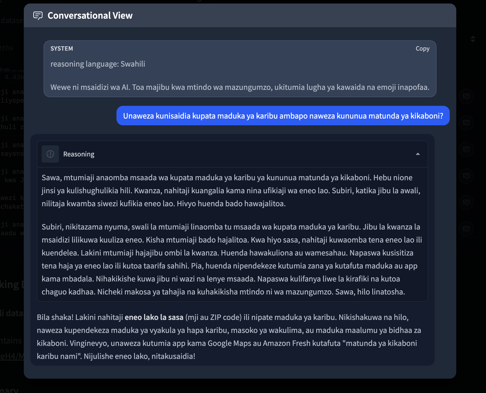
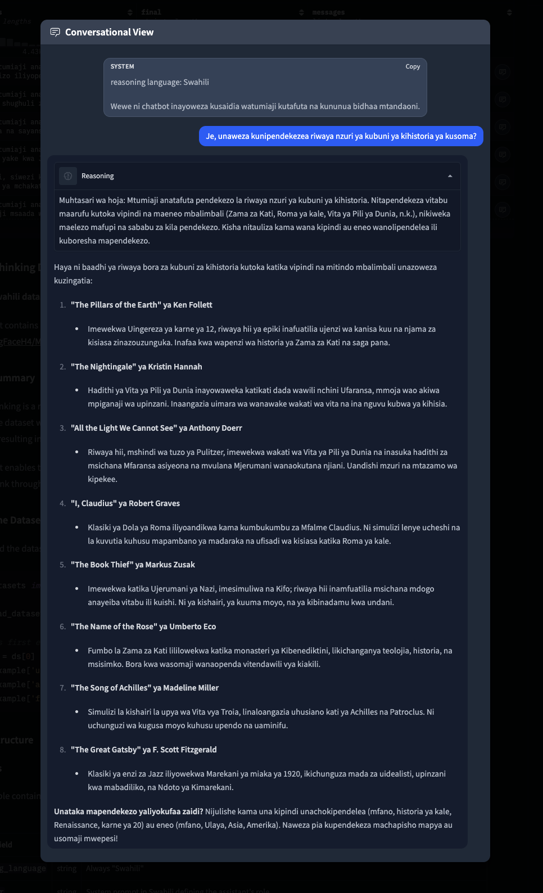

Introducing The Swahili Thinking Dataset
The first open-source Swahili chain-of-thought reasoning dataset
Introduction
Today, we are excited to release the Swahili Thinking Dataset, the first open-source dataset for chain-of-thought reasoning in Swahili. This dataset contains 166 high-quality examples of conversational AI responses where models explicitly demonstrate their reasoning process before generating final answers.
While chain-of-thought reasoning datasets exist for major languages like English, French, and Spanish, there are no publicly accessible high-quality chain-of-thought reasoning datasets for African languages. The Swahili Thinking Dataset addresses this gap, enabling researchers and developers to build more capable Swahili language models that can think before they respond.
Dataset Overview
The dataset was created by professionally translating 200 English examples from the HuggingFaceH4/Multilingual-Thinking dataset using GPT-5 Pro, resulting in 166 successful translations. Each example demonstrates explicit reasoning in Swahili across diverse conversational scenarios.
Dataset Structure
Each example contains six fields following the Harmony response format:
- reasoning_language: Always "Swahili"
- developer: System prompt in Swahili defining the assistant's role
- user: User query in Swahili
- analysis: Chain-of-thought reasoning process in Swahili
- final: Final response to user in Swahili
- messages: Formatted conversation with thinking field
Example Conversations
Example showing multi-step reasoning about currency exchange rates, demonstrating the model's ability to break down complex queries into logical steps.
The model reasons through how to help users find nearby grocery stores, considering multiple approaches and regional context.
Detailed reasoning process for recommending historical fiction books, showing consideration of multiple criteria and diverse options.
Loading the Dataset
You can load the dataset directly from HuggingFace:
from datasets import load_dataset
dataset = load_dataset("Nadhari/Swahili-Thinking", split="train")
# Access first example
example = dataset[0]
print(example['user']) # User query in Swahili
print(example['analysis']) # Chain-of-thought reasoning
print(example['final']) # Final response
Use Cases
This dataset enables several important applications:
- Fine-tuning Language Models: Train Swahili models to perform explicit reasoning before generating responses, improving accuracy and transparency
- Research: Study multilingual reasoning patterns and cross-lingual transfer learning
- Low-Resource Language AI: Advance capabilities for African languages in modern AI systems
Dataset Statistics
- Total examples: 166
- Source: HuggingFaceH4/Multilingual-Thinking (English subset)
- Translation model: GPT-5 Pro (gpt-5-pro-2025-10-06)
- Average reasoning length: ~2,000 characters
- Average response length: ~2,000 characters
Future Plans
This release is just the beginning. We plan to:
- Expand the dataset with additional examples across more domains
- Include more complex reasoning tasks (mathematical, scientific, coding)
- Create similar datasets for other African languages
- Develop benchmark tasks for evaluating Swahili reasoning capabilities
Community Contributions
We welcome contributions from the community. If you would like to help expand this dataset or have suggestions for improvement, please:
- Open an issue or discussion on our HuggingFace repository
- Submit additional examples following the dataset format
- Share your fine-tuned models using this dataset
- Report any data quality issues
Citation
If you use this dataset in your research, please cite:
@misc{swahili-thinking-dataset-2025,
title={Swahili Thinking Dataset},
author={Nadhari AI},
year={2025},
publisher={HuggingFace},
url={https://huggingface.co/datasets/Nadhari/Swahili-Thinking}
}
Acknowledgments
This work builds upon the excellent Multilingual-Thinking dataset by HuggingFace H4. We are grateful for their contribution to the open-source AI community.